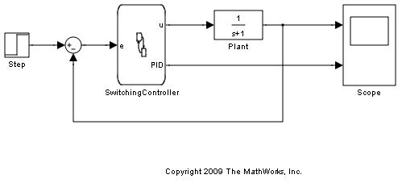
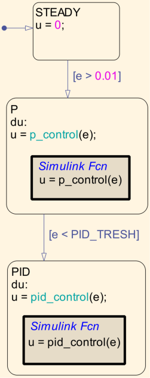
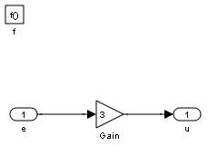
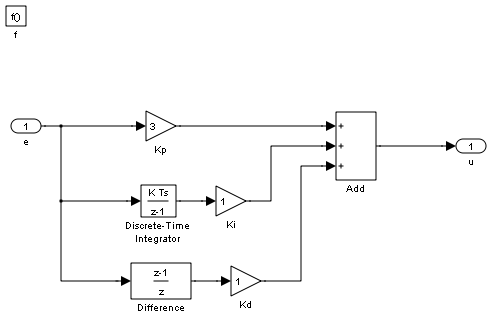
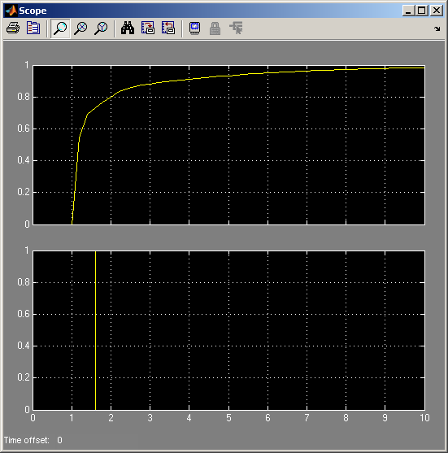
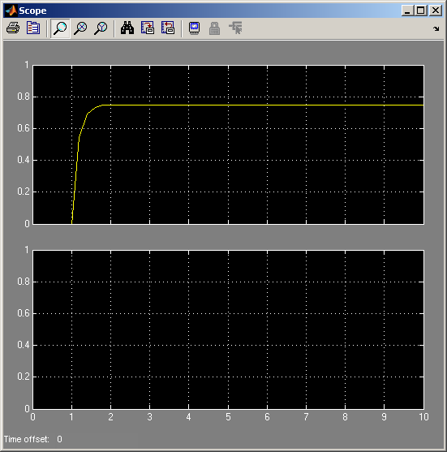

Using Simulink® Functions in Stateflow® to Design Switching Controllers
This model demonstrates how you can design switching controllers by combining the power of Stateflow and Simulink functions.
The Stateflow chart SwitchingController implements a simple switching controller which switches between three states: STEADY, P and PID. When in STEADY state, we produce zero control output. When in P or PID, we delegate to Simulink function call subsystems in order to compute the required control effort.
The "Output State Activity" for the state PID is checked. Therefore, in addition to the control output u, the Stateflow chart also produces a logging output with the same name as the state PID.
The condition for switching from P to PID is based on the error being low enough [e < PID_TRESH]. PID_TRESH is a variable defined in the Model Workspace with a value of 0.3.
The Simulink subsystem SwitchingController/P.p_control implements a very simple proportional control with a gain of 3. If we had continued to stay in the state P, the steady state gain of the closed-loop system would be 3/4 = 0.75. Therefore, we would get an error of 0.25.
The Simulink subsystem SwitchingController/PID.pid_control implements a simple PID control strategy. The proportional gain is the same as in P thereby ensuring a smooth transition in the control effort.
When we simulate the model, we notice that the steady state error approaches zero.
In the absence of the PID control, we would have had a steady state error of 0.25. If we change PID_TRESH to 0.1, we will never get to PID, because the error will never get below 0.25 as long as we are in state P.
